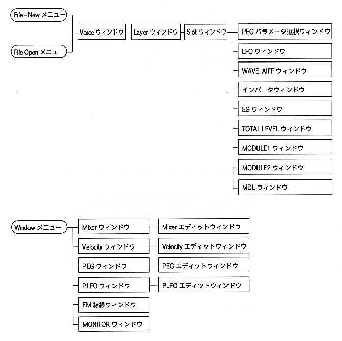

Return to previous page ｜ Return to menu ｜ Go to next page
-
7.Window
- This section describes the parameters that can be set for each window function.
-
■ Window relationship
The relationship of - window is shown below.

Return to previous page ｜ Return to menu ｜ Go to next page